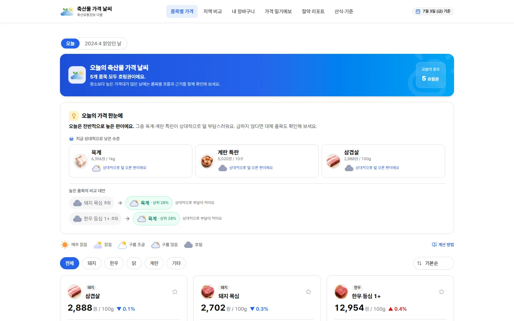
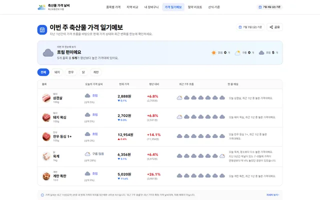
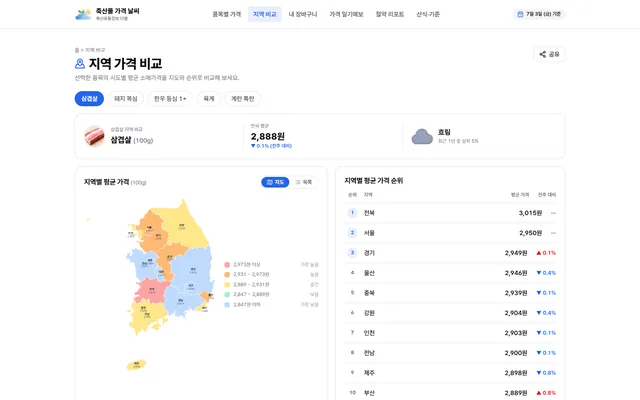
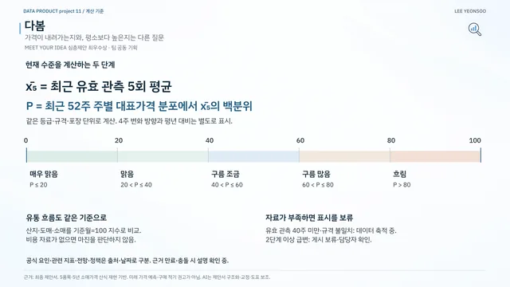
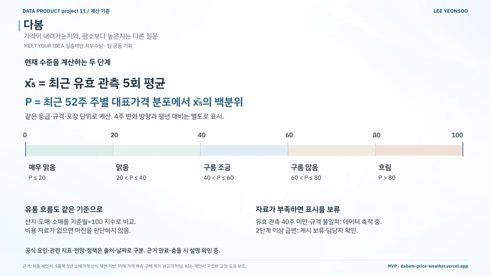
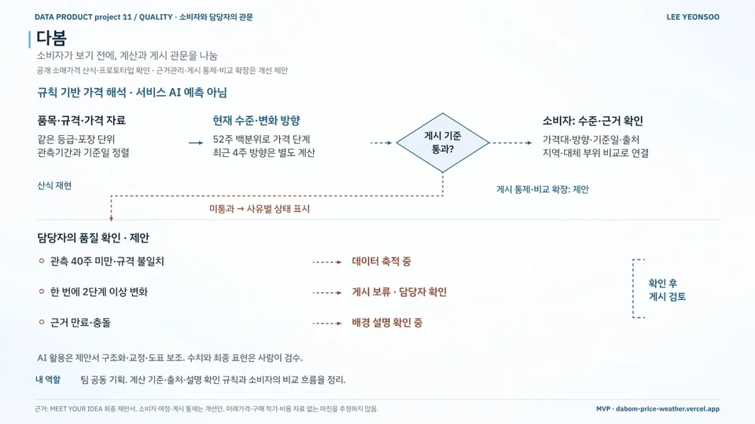

데이터 분석 / MVP 구현 / 공공·정책 / 농축산·식품
다봄
Dabom — Livestock Price Weather
기존 '다봄' 서비스의 가격 비교 기능을 개선하는 규칙 기반 프로토타입
현재 상태소매가격 산식 재현·웹 시연 · 근거관리·게시 통제·비교 확장은 제안 단계
- 기간
- 2026 (결과 발표 2026.09.07)
- 팀
- 팀 프로젝트
- 내 역할
- 팀 공동 기획
- 도구
- 수상
- 최우수 심층제안 최우수상 · 축산물품질평가원장상
2026 축평원 서비스 MEET YOUR IDEA 공모전 (심층 제안 부문)수상 확정 · 시상 대기 · 시상식 2026.10.28
내 기여팀 공동 기획에서 가격 계산 기준과 출처·설명 점검 규칙, 소비자의 가격 비교 흐름을 정리했습니다.
사진·화면


크게 보기
크게 보기이번 주 축산물 가격 일기예보출처dabom-price-weather.vercel.app/price-we… (새 창) 
크게 보기지역 가격 비교: 시도별 지도와 순위표출처dabom-price-weather.vercel.app/region (새 창) 
크게 보기현재 수준 계산: 최근 5회 평균을 52주 분포 백분위로 읽기출처팀 자료


발표 자료

크게 보기포트폴리오 슬라이드 30쪽 · 본문 내용을 한 장으로 정리한 슬라이드 
크게 보기포트폴리오 슬라이드 31쪽 · 본문 내용을 한 장으로 정리한 슬라이드


문제
가격표 숫자만으로는 현재 가격이 평소보다 높은지, 최근 흐름이 어떤지, 무엇을 근거로 판단해야 하는지 알기 어렵습니다.
접근
- 같은 등급·규격·포장 단위에서 최근 유효 관측 5회 평균의 52주 가격 분포상 백분위 계산
- 5단계 '가격 날씨': 매우 맑음(P≤20) · 맑음 · 구름 조금 · 구름 많음 · 흐림(P>80)
- 4주 변화 방향과 평년 대비는 별도 표시, 산지·도매·소매는 기준월=100 지수로 비교
- 관측 40주 미만·규격 불일치는 '데이터 축적 중' 표시, 2단계 이상 급변은 게시 보류 후 담당자 확인
핵심 판단
'가격이 내려가는지'와 '평소보다 높은지'를 다른 질문으로 분리해 따로 계산
비용 자료가 없는 유통 마진 판단은 제외
가격 계산은 규칙으로 두고, AI는 제안서 구조화·교정·도표 보조로 역할 분리
결과
- 가격 수준 기준52주 백분위최근 유효 관측 5회 평균의 위치
- 게시 보류 기준관측 40주 미만규격 불일치 포함 · '데이터 축적 중'
- 산식 재현 범위5품목 · 5년공개 소매가격
- 공개 소매가격의 상대적 수준과 변화 방향을 설명하는 규칙 기반 프로토타입 (5품목·5년 소매가격 산식 재현)
- 기존 서비스 개선 제안: 근거관리 · 게시 통제 · 비교 확장
- 심층제안 최우수상
AI 활용
가격은 규칙에 따라 계산합니다. 생성형 AI는 제안서 구조화와 문장 교정, 도표 작성 보조에 활용했습니다.
한계와 다음 단계
미래 가격 예측이나 구매 시점 권고 서비스가 아니며, 시연 화면은 특정 기준일 가격을 씁니다. 소비자 여정·게시 통제·비교 확장은 팀의 개선 제안입니다.